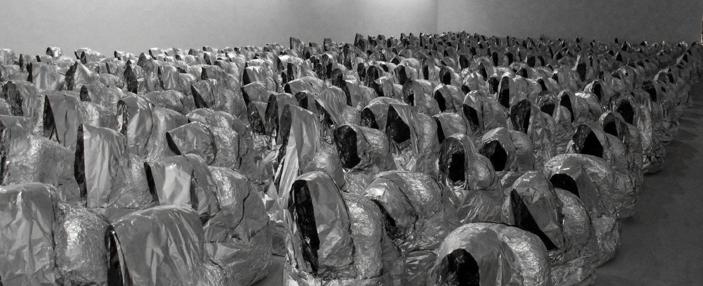
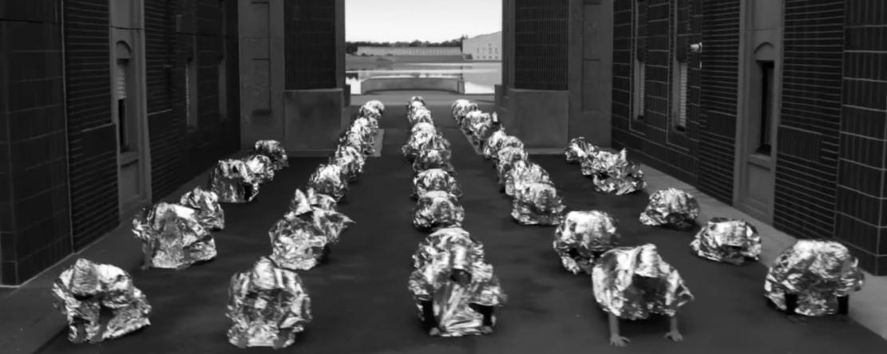

Kader Attia est un artiste françai d'origine algérienne né en 1970. Son art est au service de la réflexion, sur les thématiques de la culture occidentale, orientale, l'identité de la société, la consommation. Dessin, installations, photographies, il utilise une multitude de moyens pour provoquer le sentiment politique chez le spectateur.
En 2007, il réalise “Ghost” un ensemble de 102 sculptures en papier d'aluminum, moulées sur le corps d'une femme ayant la position de prière. En 2016, un clip de Nekfeu et Dosseh, “Putain d'époque”, est retirée de Youtube et contraint d'arrêter sa diffusion en raison de plagiat. En effet, une scène du clip ressemble fortement à à l'installation de l'artiste contemporain. Ce dernier déclare:
« Cela ne me fait pas du tout plaisir d’avoir été contraint de demander l’arrêt de la diffusion d’un clip. Mais en tant que plasticiens, nous devons nous défendre face aux utilisations non consenties de nos œuvres. Personne ne m’a demandé d’autorisation pour réaliser ce clip. Tout le monde nous pille, que ce soit la publicité ou l’industrie culturelle. Universal est responsable, et elle sait parfaitement défendre les droits d’auteur quand elle lutte contre le téléchargement illégal. Chaque artiste, qu’il soit musicien, plasticien ou autre, doit défendre l’intégrité et le respect de son œuvre. »
A gauche, “Ghost” de Kader Attia. A droite, le clip de Dosseh et Nekfeu.

